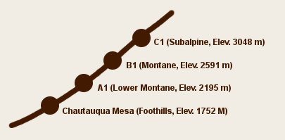

C-1 Weather Station

photo by Don Van Horn, 1958

Elevation: 3048m (10,000ft)
Locality: Adjacent to the weather station C1 of the Institute of Arctic and Alpine Research, The University of Colorado.
Vegetation: Sub-alpine forest region. Mostly lodgepole pine. Vegetation is composed of herbs such as Thermopsis divaricarpa, and several species of Potentilla and sedum, and sedge and grasses.